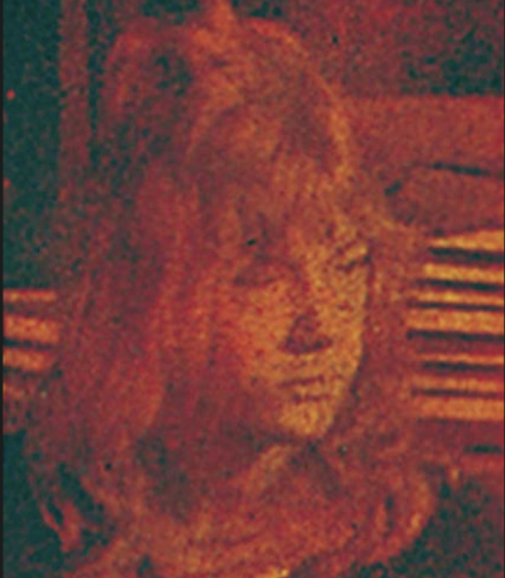

Vol. 3 came out after Queen's second Japanese tour in 1976 and was entitled "Why are they so amazing?? All About Queen's Japanese Tour". It contains several pages of photos from the tour as well as detailed info on the sound and lighting they employed. All the usual features are there, as well as an interview with the "Tokyo Patrol", the four bodyguards hired to keep the band from getting mauled while in Japan, and a forward by Hamasaki from Warner Pioneer.

Roadie John Harris as he appears on the back of Queen
Interesting want ads include a kid who wants someone to sell them John's autograph for under ¥500 (10 USD in 2025 money!); a request to borrow an audio cassette tape copy of Queen's appearance on Star Sen or Pops in Picture, with an offer to lend a live Queen audio recording in return; and a request for a picture of roadie John Harris.